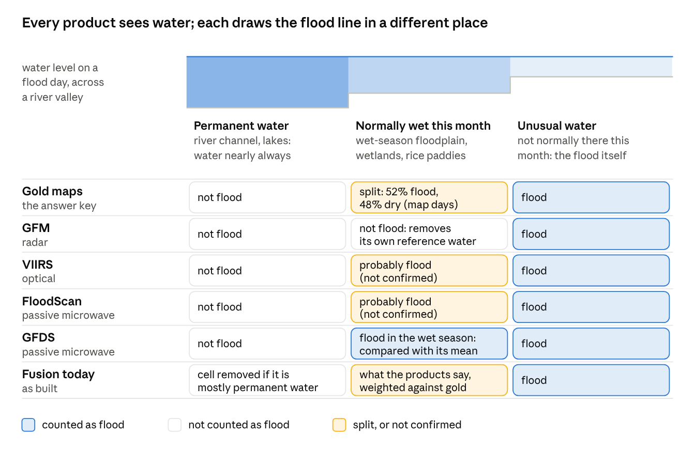
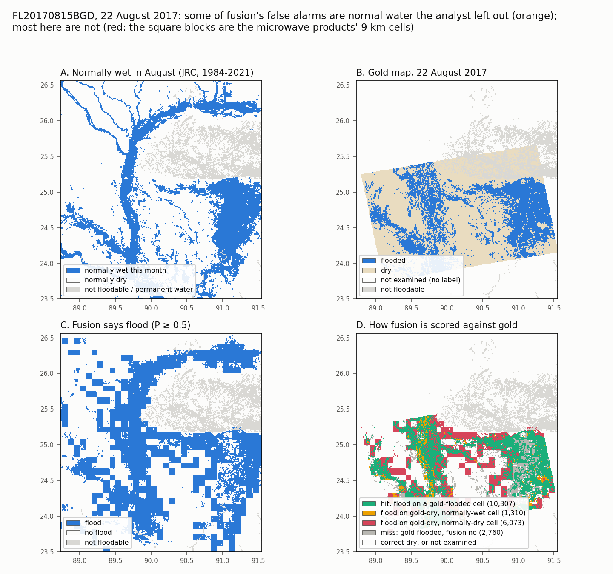
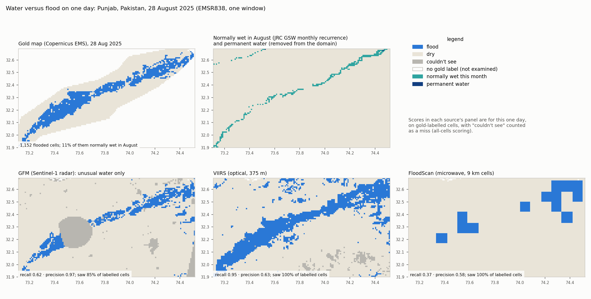
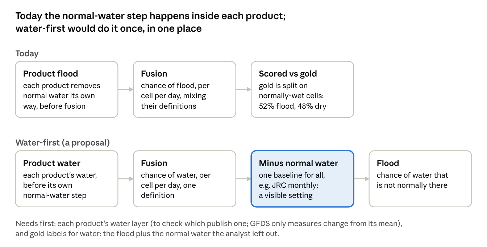

8 Water versus flood
Every product here detects water. A flood is water that is not normally there. Deciding what counts as normal is a separate step, done after the water is detected, and each product does it its own way. The gold maps make that call too, by eye. This section shows where they differ and what that does to the scores.

Three kinds of water.
- Permanent water: river channels and lakes, water nearly all the time (JRC Global Surface Water occurrence of at least 90%). Every product and the gold maps leave it out of “flood”, and cells that are mostly permanent water are removed from the domain.
- Normally wet this month: water that is usually there at this time of year: a wet-season floodplain, a wetland, a flooded rice paddy. A cell is normally wet in a month if at least 30% of its 30 m pixels were water in that calendar month in at least half the years from 1984 to 2021 (JRC monthly recurrence). This is where the products and gold disagree.
- Unusual water: water that is not normally there this month. This is the flood everyone agrees on.
How each draws the line on normally-wet cells.
- GFM subtracts its own reference water, so it reports only unusual water.
- GFDS compares each day’s signal with its long-term mean, so wet-season water reads as above normal and counts as flood.
- VIIRS and FloodScan appear to count seasonal water as flood; this is not confirmed.
- The gold maps are split. On map days, of the labelled cells that are normally wet, 52% are labelled flooded and 48% dry. These cells are only 7% of the labelled cells, but hold 38% of the gold flood. One map can do both, as in the example below: the analyst left the main river channel out of the flood but counted a large seasonal wetland as flooded.

How to read it. Bangladesh, 22 August 2017 (FL20170815BGD), one of the four Bangladesh floods that hold 40% of the gold flood. Fusion here is the cross-validated model, fitted without this event.
- A: cells normally wet in August. The Jamuna river and its side channels run north to south; the large area in the east is a seasonal wetland.
- B: the gold map. Inside the satellite footprint (the tilted rectangle) the analyst marked flooded cells (blue) and dry cells (sand). The river channel is mostly marked dry: the analyst left it out of the flood, presumably as normal water. The eastern wetland is marked flooded.
- C: fusion’s flood calls. The square blocks are the microwave products’ 9 km cells.
- D: how each of fusion’s calls is scored. Green: a hit. Orange: fusion says flood on a cell gold calls dry but that is normally wet, mostly the river channel. Red: fusion says flood on a gold-dry cell that is normally dry, mostly the edges of the coarse microwave blocks. Grey: flood fusion missed.
Is orange a false alarm? Only if the target is flood. Fusion saw water there, and on a cell that is normally wet this month the water is probably really there; gold left it out of the flood, most likely as normal water. The scores count it as a false alarm because gold says dry. A product that reports water, and leaves “is this normal?” to a later, explicit step, is not wrong; that is the water-first design at the end of this section.
How much this changes the scores. Over all 170 events, on map days:
- fusion makes 202,714 flood calls on gold-dry cells, and 39,076 of them (19%) are on normally-wet cells, the orange kind;
- not counting those, fusion’s precision would be 0.51 instead of 0.46;
- the other 81%, the red kind, are on cells that are normally dry. They are coarse microwave cells reaching past the flood edge, water the analysts did not map, water the JRC record misses (it cannot see through persistent cloud), or plain errors. These labels cannot tell them apart.
Removing normal water after the fact does not work with these labels. If fusion dropped every flood call on a normally-wet cell, as one more post-processing step, it would remove the 39,076 calls gold labels dry but also 82,037 calls gold labels flooded. Recall would fall from 0.43 to 0.22, precision from 0.46 to 0.36, and F1 from 0.44 to 0.27. Every single product lost the same way in the first run (VIIRS recall 0.41 to 0.35, microwave 0.47 to 0.39). The reason is that gold counts about half of that water as flood: a masked product cannot be scored fairly against unmasked gold. GFM’s recall (all cells) is lower on normally-wet cells than elsewhere (0.11 against 0.16); whether that is its stricter definition or less coverage there has not been separated.
A second example, where little of the flood is normally wet:

How to read it. Punjab, Pakistan, 28 August 2025 (EMSR838, one window).
- Gold maps 1,152 flooded cells along the river. Only 11% of them are normally wet in August: the river channel itself (top middle).
- GFM could not see a large patch (grey), which counts against its recall here (0.62, all cells). Where it saw, nearly every flood call was right: precision 0.97.
- VIIRS caught almost all of the mapped flood (recall 0.95). It also flagged water outside it (precision 0.63), some of which may be real water the analysts did not map.
- FloodScan’s 9 km cells catch the flood only in coarse blocks: recall 0.37, precision 0.58.
Scores are for this one day, on gold-labelled cells.
A cleaner design: detect water, then remove normal water once.

Today each product removes normal water its own way before fusion sees it, so fusion mixes several definitions, and gold mixes them again. In a water-first design, each product gives fusion its water; fusion estimates the chance of water; and one normal-water baseline turns that into a chance of flood. The definition of flood becomes one setting that users can see and change. It would make the target clear. It would not by itself fix the over-confident probabilities, which persist on both kinds of cell (Results, Water versus flood: where the problems sit).